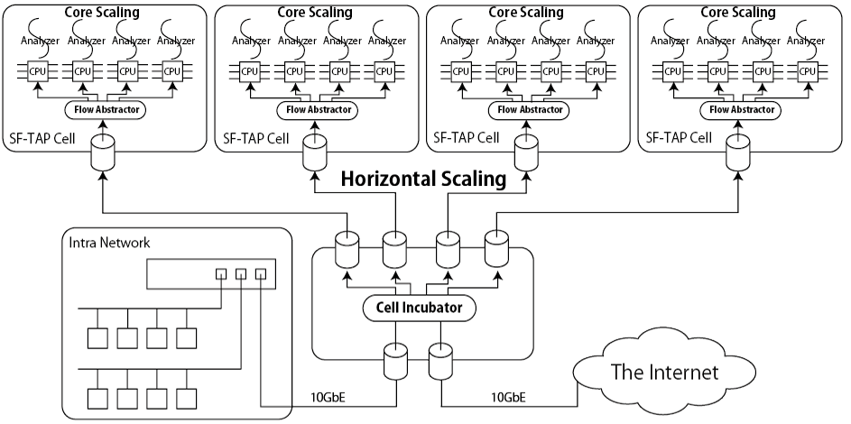

The SF-TAP is a platform for application-level network traffic analysis. It can deal with high-bandwidth network traffic because of the scalable architecture. Furthermore, the SF-TAP allows developers to easily implement application-level network traffic analyzers because of some abstractions. The SF-TAP provides two main components, which are the SF-TAP flow abstractor and the SF-TAP cell incubator.
The SF-TAP flow abstractor abstracts network traffic by files of UNIX domain socket, much like Plan 9, UNIX's /dev or /proc. It captures L2 frames via a NIC by pcap or netmap, defragments fragmented IP packets, reassembles TCP flows, and classifies the flows by using regular expressions, which indicates application protocols. The classified flows are outputted to the files provided by UNIX domain socket. Accordingly, developers can only focus to implement application-level network traffic analyzers by accessing the files. In other words, they do not need to implement complicated programs, such as TCP reassembler.
The SF-TAP cell incubator is a software-based network traffic balancer that mirrors and separates network traffic based on the flows. The flows are forwarded via multiple NICs to multiple instances of the SF-TAP flow abstractor to allow executing analyzers, which tend to consume many computer resources, on multiple physical machines.
@inproceedings {193176,
author = {Yuuki Takano and Ryosuke Miura and Shingo Yasuda and Kunio Akashi and Tomoya Inoue},
title = "{SF-TAP: Scalable and Flexible Traffic Analysis Platform Running on Commodity Hardware}",
booktitle = {29th Large Installation System Administration Conference (LISA15)},
year = {2015},
month = Nov,
isbn = {978-1-931971-270},
address = {Washington, D.C.},
pages = {25--36},
url = {https://www.usenix.org/conference/lisa15/conference-program/presentation/takano},
publisher = {USENIX Association},
}subscribe via RSS